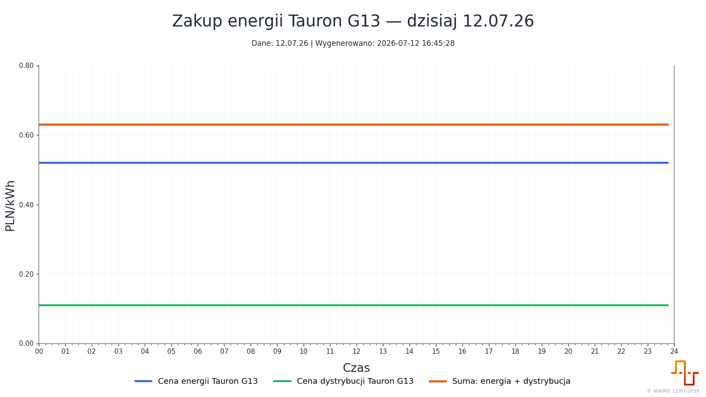
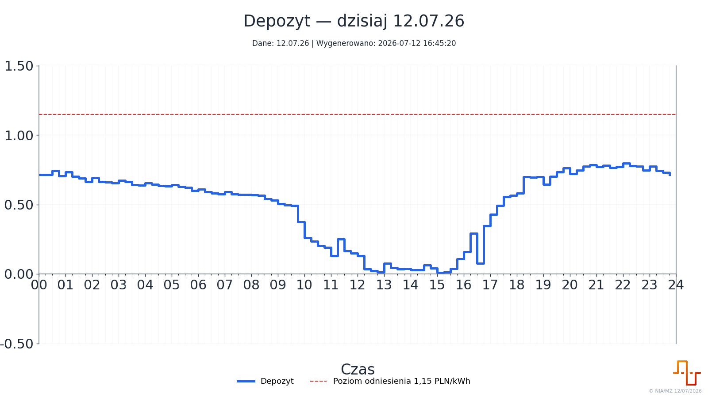
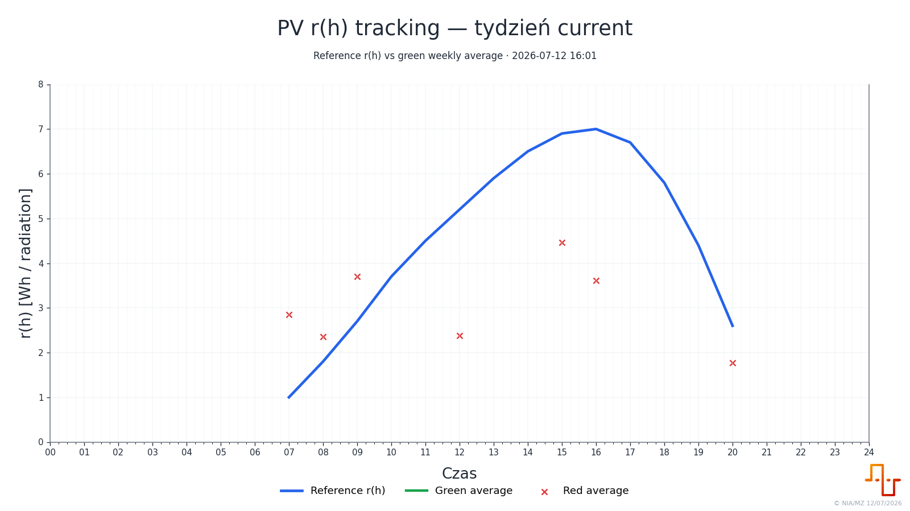
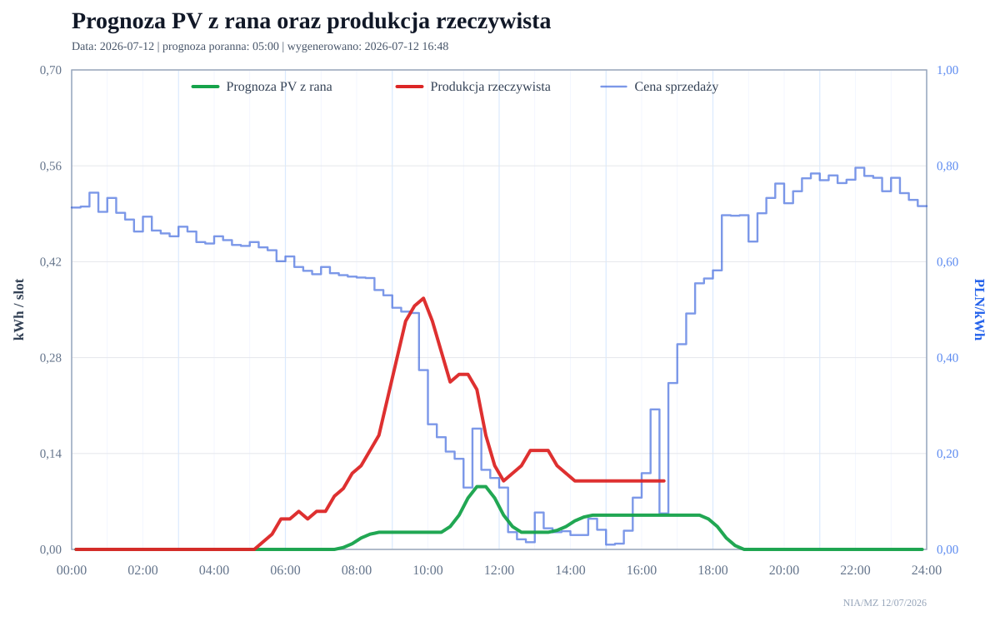
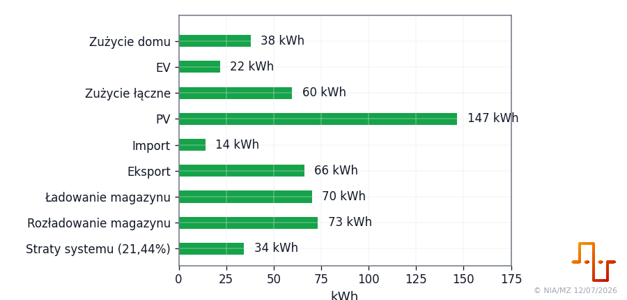
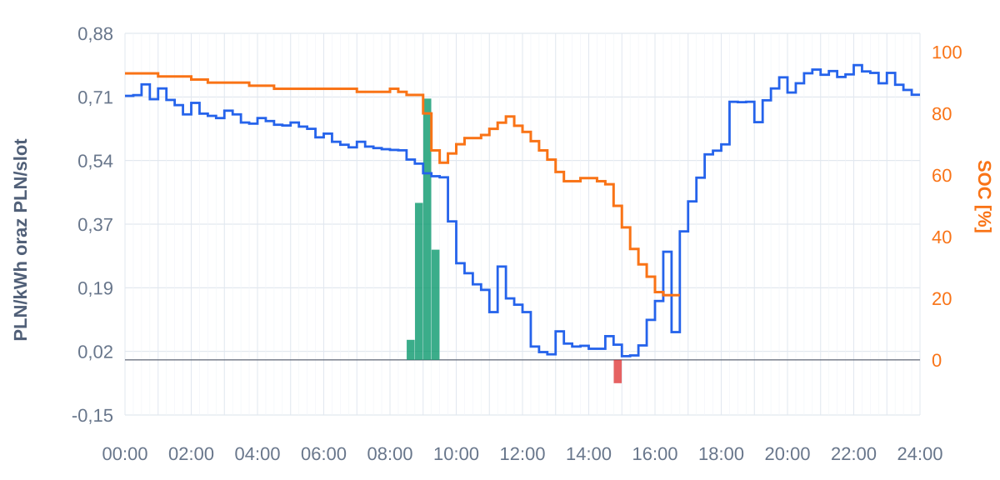

Pobiera ceny i taryfy
Rozumie G13, ceny zakupu, ceny sprzedazy i sloty godzinowe, w ktorych energia ma rozna wartosc.
Domowy system zarzadzania energia
W praktyce system odpowiada na bardzo konkretne pytanie: co zrobic z energia w najblizszych godzinach, zeby dom, bateria i samochod dzialaly taniej oraz rozsadniej. Pobiera taryfy i ceny, czyta dane z instalacji, robi lokalna prognoze PV, uklada decyzje i wysyla polecenia do warstwy wykonawczej.
Co to robi, bez skrotow myslowych
Rozumie G13, ceny zakupu, ceny sprzedazy i sloty godzinowe, w ktorych energia ma rozna wartosc.
Zbiera dane z falownika, PV, baterii i EV, zeby wiedziec, co naprawde dzieje sie w domu.
Przelicza pogode na produkcje konkretnej instalacji, zamiast slepo wierzyc ogolnej prognozie.
Laczy PV, zuzycie, ceny i SOC baterii, zeby wybrac sensowny plan na kolejne godziny.
Przeklada decyzje na profil falownika, prace baterii i ladowanie samochodu.
Zapisuje historie, porownuje prognozy z rzeczywistoscia i pomaga poprawiac model.
Najkrotsza definicja
EMS, czyli Home Energy Management System, to system, ktory laczy produkcje PV, zuzycie domu, baterie, ceny energii i odbiorniki elastyczne, takie jak samochod. W gotowych produktach czesto widzimy tylko fragment: aplikacje falownika, dashboard energii albo ladowanie auta. Tutaj chodzi o polaczenie tych warstw.
System jest mocno dopasowany do jednego domu: jego taryfy, falownika, baterii, samochodu, danych i sposobu rozliczania energii. To nie jest wada, tylko zrodlo skutecznosci. Jednoczesnie sama metoda moze byc po adaptacji zastosowana gdzie indziej: trzeba podmienic zrodla danych, taryfy, parametry instalacji i warstwe wykonawcza.
Najwazniejsza idea jest prosta: decyzja energetyczna jest dobra dopiero wtedy, gdy zna cene, pogode, stan baterii, przewidywane zuzycie i cel uzytkownika. System nie reaguje tylko na stan obecny. On probuje patrzec kilka, kilkanascie i kilkadziesiat godzin do przodu.
Mapa przeplywu
System najpierw musi wiedziec, ile kosztuje energia i kiedy. Sama informacja, ze mamy produkcje PV, nie wystarcza. Inaczej zachowujemy baterie, gdy prad jest tani, inaczej gdy zbliza sie droga godzina, a jeszcze inaczej gdy prognoza pokazuje mocne PV za kilka godzin.
Tabele G13, ceny PSE/RCE, dni robocze, weekendy i swieta.
System zamienia skomplikowane reguly taryfowe na godziny z konkretna cena i znaczeniem.
Prosty sygnal dla kolejnych modulow: tanio, drogo, warto sprzedac, warto zachowac.
Automatyka podejmuje decyzje finansowe, a nie tylko techniczne.
05 - taryfy i ceny
Jednym z mniej widocznych, ale najwazniejszych elementow systemu jest przetwarzanie taryf. Dla czlowieka taryfa bywa tabelka w PDF albo arkuszu. Dla automatyki musi stac sie precyzyjna seria godzinowa: teraz, za godzine, jutro rano, jutro wieczorem. System musi rozumiec dni robocze, weekendy, swieta, strefy G13, cene zakupu oraz cene sprzedazy energii.
To wcale nie jest banalne. Jesli system pomyli tania i droga godzine, moze naladowac auto w zlym momencie albo sprzedac energie wtedy, gdy lepiej byloby ja zachowac. Dlatego modul taryfowy tlumaczy zrodla cenowe na proste dane operacyjne: kiedy kupowac, kiedy oszczedzac, kiedy sprzedaz ma sens.


10 - dane rzeczywiste
Druga warstwa to dane z instalacji: falownik, PV, bateria, energia pobrana i oddana, stan ladowania, czesc EV. To jest warstwa faktow. Bez niej nie da sie sprawdzic, czy prognoza byla dobra ani czy decyzja automatyki przyniosla oczekiwany efekt.
W idealnym swiecie falownik udostepnialby stabilne, lokalne API. W praktyce czesto trzeba obchodzic ograniczenia producenta: pobierac dane z panelu, parsowac je, zapisywac do wlasnych plikow i pilnowac synchronizacji. To mniej efektowne niz jedno oficjalne API, ale daje niezaleznosc i historie.
Ta warstwa jest dobrym przykladem praktycznego inzynierskiego kompromisu: nie czekamy na idealny interfejs, tylko budujemy wiarygodny strumien danych, ktory da sie audytowac.

20 - pogoda, PV i kalibracja
Zwykla prognoza pogody odpowiada na pytanie, czy bedzie slonce, chmury, deszcz i jaka bedzie temperatura. System energetyczny pyta inaczej: ile energii wyprodukuje moja instalacja PV o 9:00, 12:00 i 16:00? Dlatego dane pogodowe sa dopiero surowcem.
System korzysta z Open-Meteo i danych takich jak promieniowanie, zachmurzenie calkowite oraz chmury niskie, srednie i wysokie. Nastepnie laczy je z lokalnymi krzywymi produkcji, wspolczynnikami `r`, korektami chmur i historia rzeczywistej produkcji.
Najciekawsze jest to, ze model nie musi byc raz na zawsze ustalony. Moze byc kalibrowany na podstawie roznicy miedzy prognoza a rzeczywistoscia. Jesli systematycznie zaniza produkcje przy okreslonym typie zachmurzenia, mozna to wykryc i poprawic.




Prognoza prowadzi do decyzji
Bateria na poziomie 60% nie mowi jeszcze, co robic. Trzeba wiedziec, czy jutro bedzie slonce, czy wieczorem cena bedzie wysoka, czy auto potrzebuje energii i czy w ciagu dnia pojawi sie nadwyzka PV.
Jesli prognoza pokazuje mocna produkcje w kolejnych godzinach, pelna bateria moze byc problemem. System moze sprzedac energie wczesniej albo inaczej ustawic profil falownika, zeby przyjac dzienna produkcje.
40 - raporty i dowody
Automatyka bez raportow szybko staje sie czarna skrzynka. Raporty odpowiadaja na pytania: co system widzial, co przewidzial, jaka byla cena, jaka byla produkcja, czy rekomendacja miala sens i czy decyzja byla dobra po fakcie.
Dobrze zaprojektowany raport pozwala cofnac sie do konkretnego dnia. To szczegolnie wazne przy PV: jezeli prognoza zle ocenia dni pochmurne, powinno byc to widac w historii bledow, a nie tylko w intuicji.


80 - automatyka wykonawcza
System przeklada prognozy i ceny na profile pracy falownika. Moze przygotowac strategie sprzedazy, zachowania energii w baterii albo zrobienia miejsca na nadchodzaca produkcje PV.
Najwazniejsze: bateria nie jest traktowana jak prosta beczka energii. Jest zasobem, ktorego wartosc zalezy od pory dnia, ceny i prognozy.
Auto jest duzym, elastycznym odbiornikiem. System moze ladowac je z nadwyzki PV albo z taniej taryfy, a jednoczesnie nie powinien bezmyslnie konkurowac z bateria domu.
Istnieja tez tryby reczne: zadana liczba kilometrow, moc, okno czasowe i soft stop.
Im blizej fizycznego sterowania, tym wazniejsze sa logi, historia, blokady i aktualny stan. Kazda decyzja powinna byc mozliwa do odtworzenia: kiedy, dlaczego i z jakim skutkiem.
Dlatego obok samego sterowania istnieje audyt profili i statusow.
Na tle rynku
Skutecznosc i ograniczenia
System ma dane rzeczywiste, taryfy, prognoze PV, raporty, automatyke wykonawcza, statusy i audyt. To oznacza, ze nie jest tylko zbiorem wykresow, ale pelnym lancuchem od danych do dzialania.
Najwazniejsze sa bledy prognozy PV, szczegolnie przy zachmurzeniu, oraz zgodnosc decyzji z efektem: czy sprzedaz, ladowanie baterii i ladowanie auta rzeczywiscie byly korzystne.
Lokalna kalibracja prognozy PV, uwzglednienie chmur low/mid/high i polaczenie auta z logika baterii i taryfy G13 to elementy bardziej dopasowane niz typowe gotowe aplikacje.
Co dalej
`opis_user` tlumaczy sens i korzysci. `opis_owner` powinien pozniej opisac, jak ktos moglby wdrozyc podobny system u siebie: wymagane dane, urzadzenia, taryfy, bezpieczenstwo, konfiguracja i typowe decyzje. `opis_developer` powinien byc dla osoby, ktora chce wejsc w kod, poprawiac modele, dopisac nowe taryfy albo rozwijac modul PV.